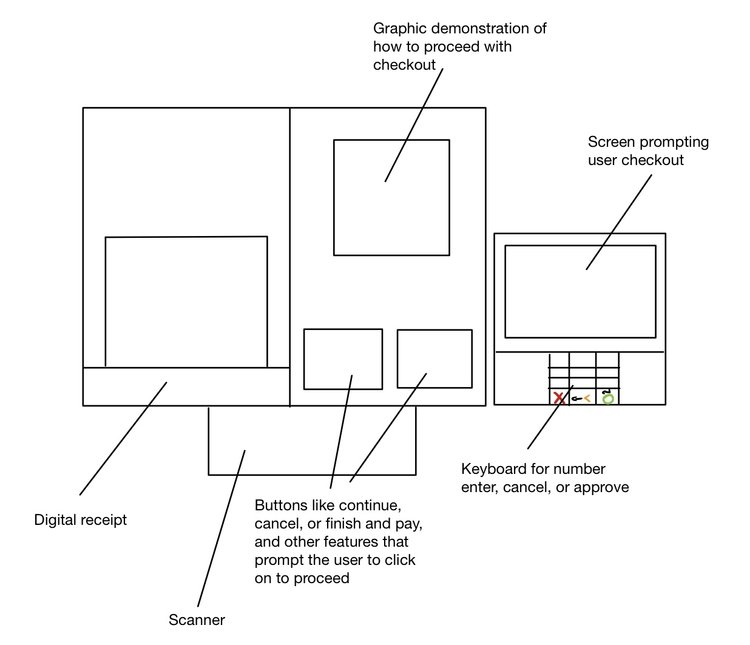
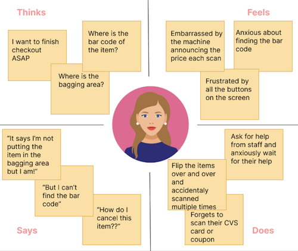
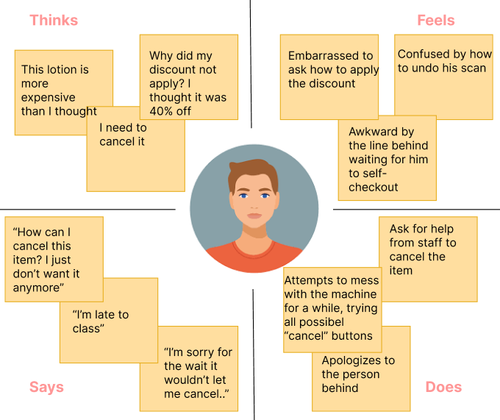
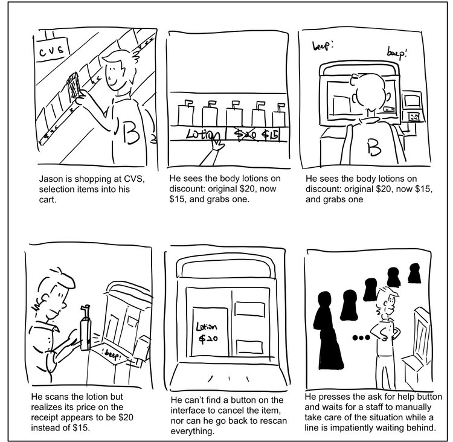

Personas and Storyboards
Observed real users interacting with the CVS self-checkout interface, interviewed these
individuals about their experiences, created personas based on these users,
and illustrated a storyboard for one of the personas
User Research
Introduction
At the beginning of my UI/UX course, we learned about different methods of
gathering research about user experiences. For this project, we were to choose
an interface that could be improved and observe users in order to develop
personas and a storyboard around that interface.
Context
I chose to observe people's interactions with the CVS self-checkout machine CVS Pharmacy began to
install new Toshiba Self-Checkout System 7 modular solutions across their stores in late 2019. I stepped into the
user’s shoes and explore how they interact with the interface.

The CVS Checkout Interface aims to help customers self-checkout in lieu of staff checkout. Customers are allowed to scan their items, and checkout using the POS machine supported methods.
It has two key components: the left main screen, and a POS machine on the right. The left half screen of the touch screen is a real-time digital receipt of the items a customer has scanned, and the right half contains a graphic demonstration of how the user should proceed, and a a block of buttons that prompt the user to continue, finish and pay, cancel, ask for help, etc.
The POS machine mainly contains a screen and a keyboard: the screen shows the total amount to pay and prompts the user to checkout. The keyboard has numbers 0-9 and three buttons that represent cancel, approve, and go back respectively.
Questionnaire and Research
I first observed 5 users' interaction with the CVS self-checkout machine, and found out the following:
- Users get prompted to start scanning items very smoothly
- Users attempt but fail at cancelling items they don’t want after scanning
- Seem confused and startled when the machine keeps prompting the user to place the item in the bagging area
- Forget to put in phone number first and doing don’t get prompted to do it again after they click “finish and pay“
- Attempt to scan items by flipping the item and scanning in different angles and directions facing the scanner
- Don’t know when to scan coupon
Then, I asked my 5 users to answer the following questions:
- Please indicate the frequency that you shop at CVS
- Please indicate the frequency that you use self-checkout at CVS
- If you used CVS self-checkout machine for your last checkout, about how many minutes did it take to to checkout?
- To what extent have the CVS self-checkout machine prompts led you through your checkout process smoothly?
- Which of the following processes did you have problem with? (initiating self-checkout, finding bar code, scanning bar code, placing item in the bagging area, scan CVS care card, apply coupon, ask for staff help, proceed to checkout, obtain receipt, undo a command, Other: Please specify)
- Which of the following best describe your emotions when using the self-checkout machine?
- In your opinion, how effective is the CVS self-checkout machine overall?
After analyzing user responses to the questionnaire, I've noticed:
-
More than half of the participants reported to feelanxious and embarrassed when using the CVS self-checkout machine
-
All but one customer reported to have used CVS self-checkout machine at their last checkout, and the average frequency is above 86%
-
Even though participants reported having problems mostly with “scanning bar code“, “scanning cvs card“,
“applying coupon“, and “undo a command“, they rated the overall efficacy to be “Somewhat effective“ to “Very effective“
Empathy Maps
Using the data collected during my observations and interviews, I constructed
2 personas with empathy maps that describe what they think, feel, say, and do.

Emily
-
Young profession living in the Providence area in natural science research
- She faces a problem with placing the item in the bagging area and finding the bar code
-
Emily represents almost half of the demographic of the customers of CVS on Thayer.
These young professionals I studied usually shop online and have little time for in-store shopping.
When it comes to shopping in CVS, they prefer to use the self-checkout machine as that is what they
are normally used to doing at home. However, this casts a problem on looking for the bar codes on the items
and the unfamiliarity of the interface, i.e., not knowing where the bagging area is and how the interface works.

Jason
- Student athlete at Brown studying Economics
- He faces a problem with cancelling the item he does not want anymore, and applying the in store discount that
- Jason represents the other half of the demographic of the customers of CVS on Thayer - Brown students,
with half of the interviewees being athletes since it is close to the OMAC training room. These students are usually
in a rush to class or training, and feel embarrassed for having others wait. They also feel embarrassed asking for help
on pricing since most other customers waiting in line are also from Brown. Jason’s are generally familiar with the interface,
but they face issues with problems with the item price setting, and cancelling items, since these are built-in features of the interface.
Storyboard
Finally, using Jason as the main persona, I created the following storyboard
that provides context and shows how she would interact with the CVS self-checkout machine:

Conclusion
This project allowed me to practice collecting observations and showed me how
difficult it was to create good interview questions. In particular, it was
hard to ask unbiased questions that revealed deeper insights.
In general, I've learned that it's really important to consider the different
contexts in which people use a specific interface and think about how a
person's background influences their interactions. This project allowed me to
get a better understanding of a user's mental model, become more empathetic,
and think about how specific improvements would improve a person's experience.